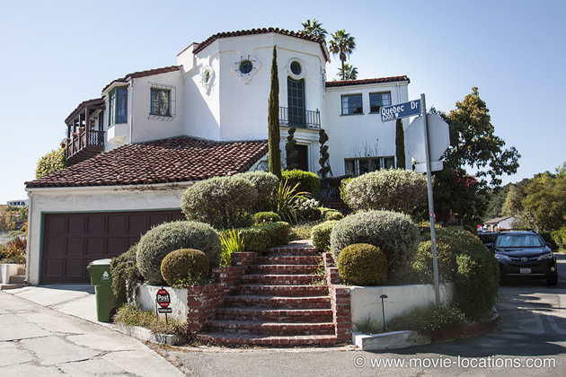

Double Indemnity
Main Content

Billy Wilder’s classic film noir, filmed around Los Angeles, sees insurance salesman Walter Neff (Fred MacMurray) ensnared by femme fatale Phyllis Dietrichson (Barbara Stanwyck) to bump off her – well-insured – hubby.
Dietrichson’s house, supposedly in ‘Los Feliz’, can be found in the maze of tiny winding lanes in the Hollywood Hills, north from Franklin Avenue. In the movie it stood alone, overlooking Hollywood, but now, although unchanged, it is packed into a densely built up area of pricy properties.
Please note that this is a private property, and do NOT disturb the residents – who obviously have no connection whatsoever with the film. As any self-respecting film fan will know, interiors were almost invariably filmed back in the controlled environment of the studio.
‘Pasadena Station’ was filmed at the Glendale Amtrak Station on Cerritos Avenue off Vassar Avenue by Forest Lawn Memorial Park.
Visit Info
Visit The Film Locations
California | Los Angeles
Visit: Los Angeles
Flights: Los Angeles International Airport (LAX), 1 World Way, Los Angeles, CA 90045 (tel: 424.646.5252)
Travelling around: Los Angeles Metro